Project 2
Part 1
Convolutions
Convolutions are a building block of much of image processing. To begin this project, I implemented them from scratch. Below is the original version of my selfie, both in color and grayscale. The images that follow are the result of convolving the grayscale selfie with various kernels. Each image's caption shows the code used to generate that image. Relevant function definitions can be found at the bottom of this section.

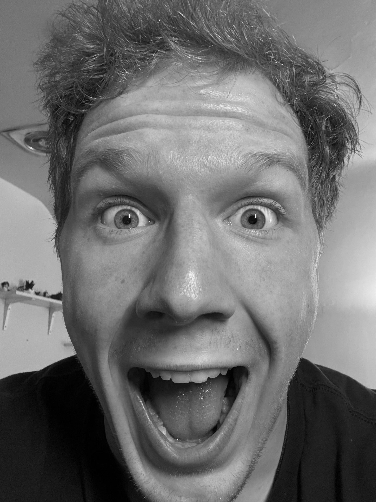
While these images all look the same, they were generated using different code. All of them convolve the selfie with a 9x9 pixel box filter, but the first two were convolutions implemented by me while the third was done using a standard library, SciPy. The first image was convolved using four nested for loops and the second one using two. As the image processing times shown in each image's caption show, reducing the nested for loops massively sped up the process. The library speeds it up even more by utilizing vector operations to minimize the number of for loops even more.


These images are also the result of convolving the selfie, though not with a box filter but rather a derivative filter. The first finds derivatives with respect to x and the second with respect to y. These "partial derivative" images locate vertivle and horizontal edges by taking on extreme values in places where nearby horizontal/verticle pixels have very different values. These derivative being very useful in computing the "gradient magnitude" (or "edge image"), as shown at the end.

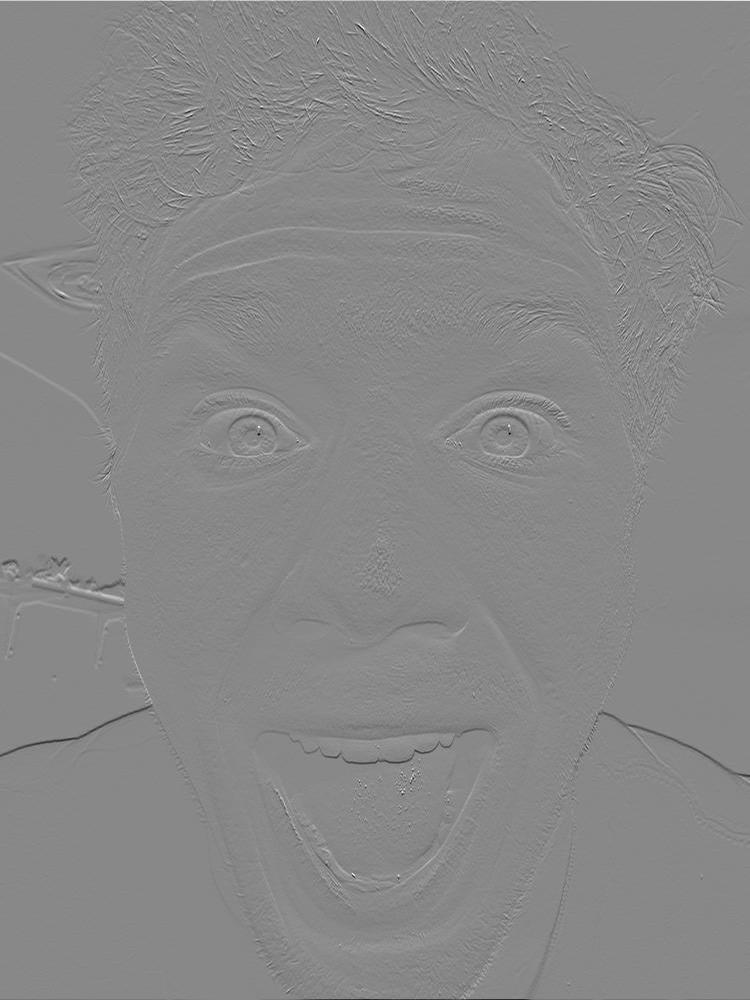
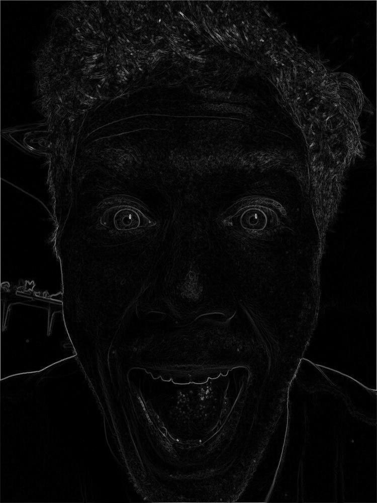
convolve_four_for_loops
def convolve_four_for_loops(image, kernel):
padded_image = pad_image(image, kernel)
pad = (kernel.shape[0] - 1) // 2
#Repetative but helpful to give variable a different name when it has a different use
kernel_center = pad
output_image = np.empty((image.shape[0], image.shape[1]))
for x in range(output_image.shape[0]):
for y in range(output_image.shape[1]):
sum = 0
for xk in range(-pad, pad + 1):
for yk in range(-pad, pad + 1):
im_value = padded_image[pad + x - xk, pad + y - yk]
kern_value = kernel[kernel_center + xk, kernel_center + yk]
sum += im_value * kern_value
output_image[x, y] = sum
return output_image
convolve_two_for_loops
def convolve_two_for_loops(image, kernel):
kernel = kernel[::-1,::-1]
padded_image = pad_image(image, kernel)
pad = (kernel.shape[0] - 1) // 2
output_image = np.empty((image.shape[0], image.shape[1]))
for x in range(output_image.shape[0]):
for y in range(output_image.shape[1]):
relevant_slice = padded_image[x : x + 2 * pad + 1, y : y + 2 * pad + 1]
output_image[x, y] = np.sum(relevant_slice * kernel)
return output_image
box_kernel
def box_kernel(kernel_size):
return np.full((kernel_size, kernel_size), 1.0 / (kernel_size ** 2))
pad_image
def pad_image(image, kernel):
pad = (kernel.shape[0] - 1) // 2
return np.pad(image, pad, mode='constant', constant_values=0)
Gradient Magnitude
In this section, I built on the strategies of the last section to isolate the edges of an image. This image below is the original.
As above, I created "partial derivative" images. The first is the partial derivative with respect to x, which can be loosely thought of as the verticle edge finder. The second is the partial derivative with respect to y, which can be loosely thought of the horizontal edge finder.
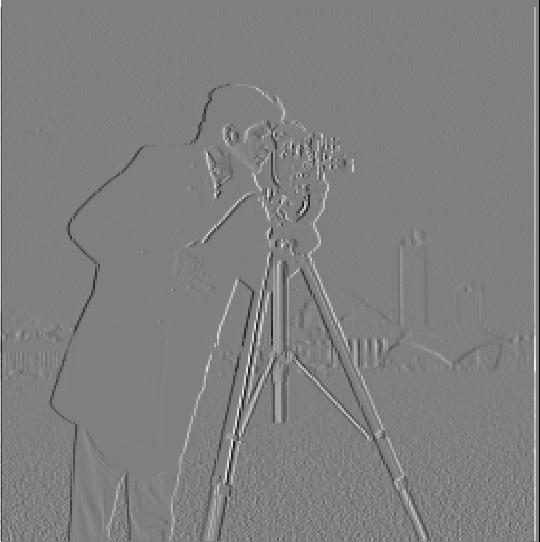
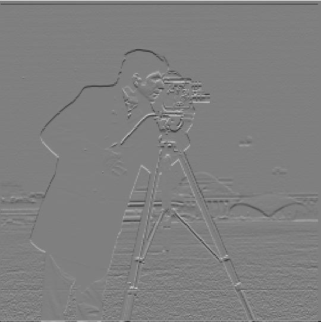
Finally, I combined these partial derivative into one image, called the gradient magnitude image because the brightness of each pixel in the gradient magntiude represents the amplitude of the gradient of the corresponding pixel in the original image. This is found by taking the square root of the sum of the squares of the pixel values from the partial derivative images.
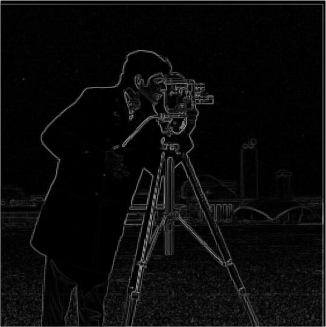
The image on the left is the raw gradient magnitude. In it, values can be shades of gray corresponding to gradient changes not caused by edges. To fix this, I set all the pixels in the image to either black or white. Pixels that were greater than 30% bright were made white and all other pixels were made black, creating the image on the right that corresponds much more to the true edges in the image.
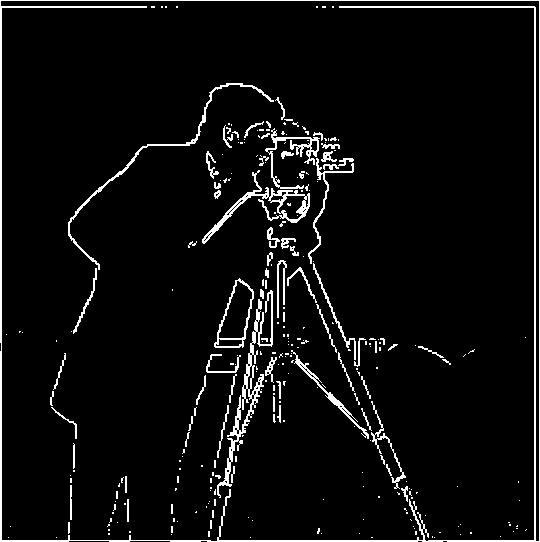
Why 30%?


There is no perfect answer. Because of the nature of gradients, things that we don't consider edges will sometimes have a higher value than things that we do, so it's impossible to perfectly cut out all the nonedges while keeping all the edges. I chose 30% because I felt it did the best to balance these. Looking at the images above, it felt like there was too much texture in the grass at 25%. Similarly, I felt too many edges were missing at 50%.
gradiant_magnitude
def gradiant_magnitude(image):
dx = np.array([[1, 0, -1]])
dy = np.array([[1], [0], [-1]])
im_dx = signal.convolve2d(image, dx, mode='same', boundary='fill', fillvalue=0)
im_dy = signal.convolve2d(image, dy, mode='same', boundary='fill', fillvalue=0)
return np.sqrt(im_dx ** 2 + im_dy ** 2)
binary_gradiant_magnitude
def binary_gradiant_magnitude(image, threshold=0.3):
return (gradiant_magnitude(image) > threshold).astype(int)
Blur + Gradient Magnitude
To attempt to isolate the edges even better, I then blurred the image by convolving it with a 9x9 box filter before finding the gradient magnitude. This ends up reducing the gradient in areas like the grass, where blurring creates a more uniform region with less gradient spikes caused by texture. It preserves the true edges, because even after being blurred these areas maintain a sharp change in brightness (even if it is slightly less sharp). As the gradients of the nonedges was reduces, the sensitivity could be upped to 14% brightness while still picking up less nonedge pixels than before.
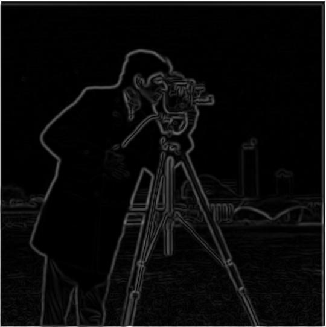
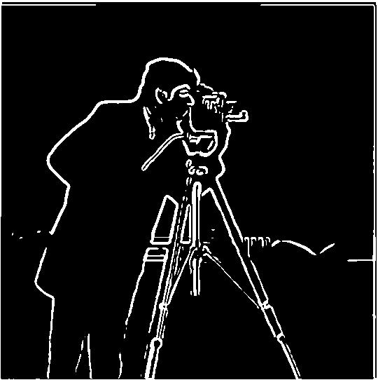
To complete this same process even more efficiently, I took advantage of the associative property of convolution. Instead of convolving the image with a box filter and then convolving the result with a derivative filter, I convolved the box filter with the derivative filter. This produced the following filters for the x partial derivative and the y partial derivative, respectively.
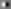
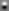
Then, using these filters and convolving with the original image I produced the partial derivative images. Combining them in the same way as before, I got the following images.


smooth_gradiant_magnitude_two_convolutions
def smooth_gradiant_magnitude_two_convolutions(image, kernel_size=9, sigma=0, threshold=0.14):
gaus = cv2.getGaussianKernel(kernel_size, sigma)
kernel = np.outer(gaus, gaus.T)
image = signal.convolve2d(image, kernel, mode='same', boundary='fill', fillvalue=0)
if threshold == 0:
return gradiant_magnitude(image)
return binary_gradiant_magnitude(image, threshold)
smooth_gradiant_magnitude
def smooth_gradiant_magnitude(image, kernel_size=9, sigma=0, threshold=0.14):
gaus = cv2.getGaussianKernel(kernel_size, sigma)
kernel = np.outer(gaus, gaus.T)
dx = np.array([[1, 0, -1]])
dy = np.array([[1], [0], [-1]])
kernel_dx = signal.convolve2d(kernel, dx, mode='full', boundary='fill', fillvalue=0)
kernel_dy = signal.convolve2d(kernel, dy, mode='full', boundary='fill', fillvalue=0)
im_dx = signal.convolve2d(image, kernel_dx, mode='same', boundary='fill', fillvalue=0)
im_dy = signal.convolve2d(image, kernel_dy, mode='same', boundary='fill', fillvalue=0)
if threshold == 0:
ret = np.sqrt(im_dx ** 2 + im_dy ** 2)
else:
ret = (np.sqrt(im_dx ** 2 + im_dy ** 2) > threshold).astype(int)
return kernel_dx, kernel_dy, ret